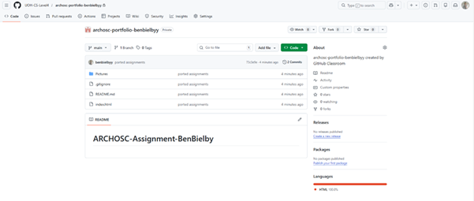
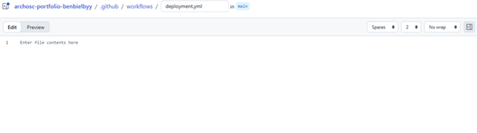
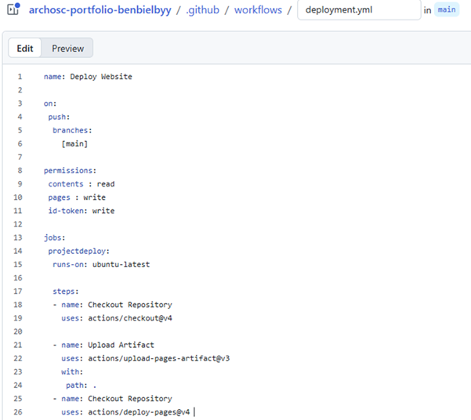
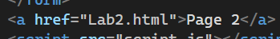

First, I cloned the repo I made in the last lab into a folder called OriginalAssignment, then I copied the files into a new folder called NewAssignment and pushed it to the new github classroom repo.

I unpublished the old GitHub page and then switched to my new repo and setup a GitHub actions page. I made a new workflow and changed main.yml to deployment.yml

Next I added the name: command to name the action. I then used on: to tell GitHub when I want the action to run, which is when I push to the main branch. Then I added the first job projectdeploy: and runs-on: which says which OS I want the virtual machine to run from. After that I added a step for checkout which tells GitHub to grab the repo and put it onto the VM. Then I added permissions above to allow GitHub to read the repo and write to pages with the correct token. Before the repo was able to upload to pages, I had to make an artifact which shows GitHub which files the workflow commits, in this case using path: . to add all files in the folder. Finally, I added the deploy to pages action.

Finally, I linked my pages together using a hyperlink.
